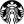
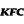
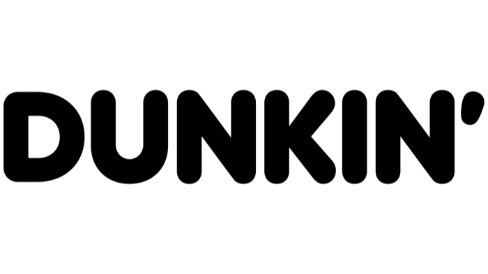
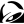
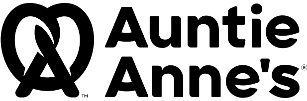
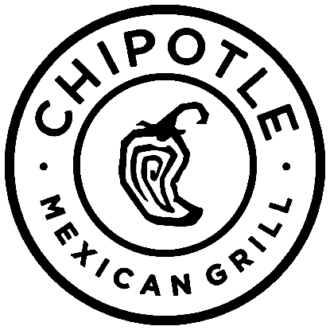
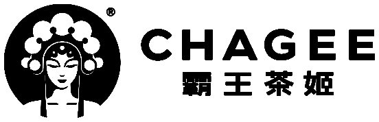
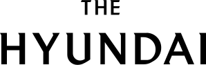
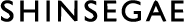

01
02
03
04
05









bbkmgLab
bkmgLab
#YOURKITCHENSOLUTIONSPARTNER
THE INFORMATION HAS BEEN UPDATED: —
LOCAL TIME [SOUTH KOREA] --:--:--
LOCAL TIME [CALIFORNIA] --:--:--
SINCE 1988, YOUR PARTNER FOR KITCHEN SOLUTIONS
3933